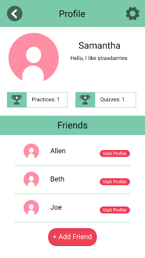
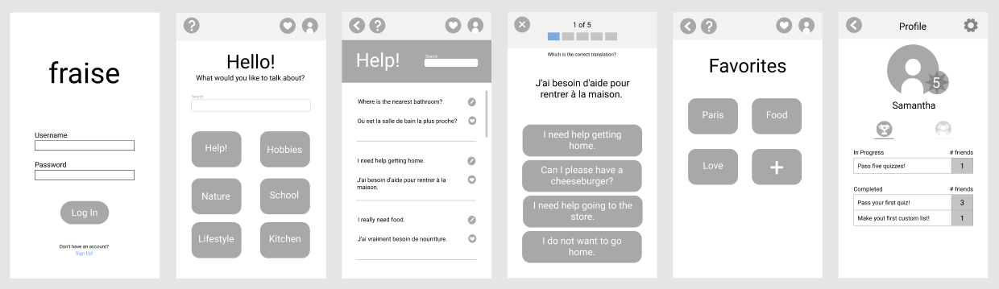
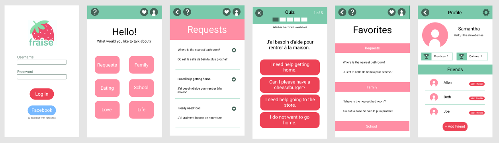
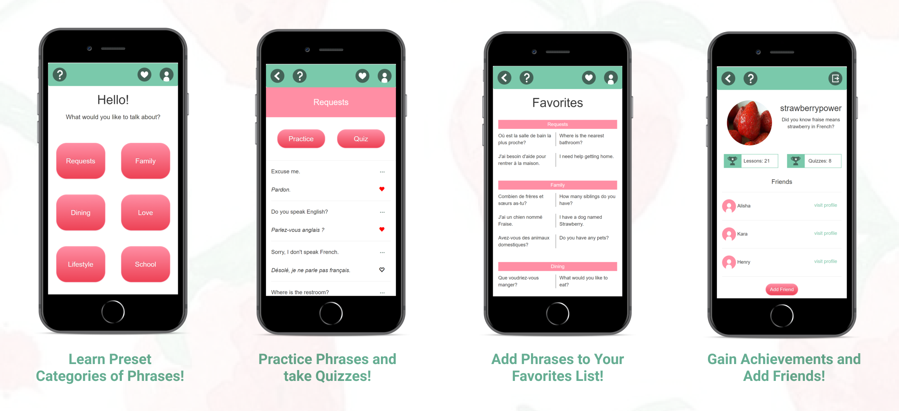

Project Overview

3 Months (January-March 2020)

Team of 3 | UX researcher, UI/UX designer, Graphic Designer
People often struggle to learn a new language due to the overwhelming amount of information provided in textbooks and other language apps. There aren’t many ways to customize this process and be able to choose which topics to learn and communicate with others with. Fraise offers a way to personalize content for users to engage in conversations about.
Background
In a team of three, fraise was created to offer users an interactive way to learn phrases in French while sharing progress with friends. As the lead designer, I was tasked with optimizing the user interface and interactions, creating low and high fidelity mockups, and helping transform the designs into HTML/CSS.
Need Finding
Participants were interviewed about their struggles learning a new language. They expressed their appreciations and frustrations with learning tools such as textbooks and apps. From their feedback, multiple unmet needs were discovered such as:
- The user needs a way to work at their own pace but be pushed to move forward.
- The user needs a way to interact with information dynamically.
- The user needs a resource that is not too overwhelming so they can be confident learning.
Storyboarding
We created storyboards to explore possible scenarios where our app could be used and result in a positive impact to somebody’s life.
Storyboard #1 - Customizable Phrases: In this example, a college student has made a friend with an international student that speaks mostly French. He knows a few random words but wants to learn phrases he can use in conversation. Using an app he’s found, he is able to choose a category to learn and talk about with his friend.
Storyboard #2 - Conversational Bot: In this example, a boy wants to speak to a girl that only speaks French. Using an app a friend suggested, he is able to practice french conversationally with a bot that replies back. Very soon, he's able to hold a conversation with the girl he wanted to speak with!
User Testing
Phase 1: Paper Prototype
We created storyboards to explore possible scenarios where our app could be used and result in a positive impact to somebody’s life.
Prototype #1 - Customizing Phrases

Prototype #2 - Conversational Bots

Using Nielsen’s Heuristic Evaluation as a guide, we asked users to rate the features of our app prototypes as they explained their process navigating through the app. This allowed us to receive feedback on the advantages and disadvantages of each prototype so we were able to consolidate those suggestions into one. Some disadvantages according to the heuristics were:
- Consistency and Standards heuristic - the navigation buttons in our prototype were inconsistent in size and location
- Help and Documentation heuristic - users misinterpreted tasks due to lack of apparent steps or explanation
- Match between System and Real World heuristic - some category names on the lessons screen weren't relevant enough to its content
With the feedback, we improved the structure to be more clearly laid out and changed the topic names to better represent their content. Users weren't sure how to use the app in some cases so we decided to add a help button on ambiguous pages along with a more hierarchical design.
Phase 2: Online Prototype
Once these features were integrated into a single app idea and developed into a working prototype, we performed another testing session with 3 new users. The users were able to actually navigate and interact with the app’s features while explaining their process. They helped point out issues using Neilson’s Heuristics, expressing their frustrations with confusing wording or button placements. We used this feedback to further improve the app’s layout according to user’s needs and expectations:.
- We decided to emphasize the help button for each page by presenting it to the user when they create their account.
- We decided to better represent the Practice and Quiz pages by placing the buttons at the top of each category page.
- We decided to alleviate confusion of tasks by adjusting the user flow so the practice can lead to quizzes then to the profile page to show achievements.
Phase 3: A/B Testing



As we finalized the app’s design and functions, we utilized A/B testing to help us decide on layout features. We had two versions of the profile page randomly generated and used google analytics to track the frequency of clicks in both versions. We decided to test whether having tabs or a one page layout be more user friendly. We hypothesized that, in the layout with two tabs (Version A), the user is less likely to navigate to the friends tab and utilize the 'Add Friend' feature, whereas in the layout without tabs (Version B), the user is more likely to use the 'Add Friend' feature because the button is immediately visible.
This testing session revealed that there was no statistical difference, however this may be due to the lack of data and would need more time to create a complete conclusion. Since users might miss the second tab, we decided to implement the one-page version for the final project.
Wireframing
I was tasked with wireframing the application to demonstrate how the app would work. I iterated through several versions of different levels of fidelity until it became representative of the final product. My teammates and I used these wireframes to develop the app from HTML/CSS and Javascript. As my teammates focused on the functionality of the app, I created and edited the stylistic aspects of the app throughout fraise's development. As the app progressed, we began altering the design by removing or adding functions and altering layout.
Final Product
We cut out a few features that we weren't able to complete functionality for in the final. This included the ability to switch out phrases with automatic translation, ability to create new categories for favorited words, and a leveling system. Due of lack of capability and time, we decided to focus on our features of practices, quizzes, and favoriting. Achievements are earned when using these features and can be compared to friends'.
View our app at fraiseapp.herokuapp.com!
Reflection
Throughout the process of creating this app, I realized how important user testing was for adjusting the flow of the app and meeting the needs of an actual user. I also have realized a growing passion for front-end development. Being the appointed designer, it was my job to provide the app with pleasing aesthetics and an easy to navigate layout. However, I wanted to go beyond just designing and help with the actual creation of the app itself. I was able to apply my designs through HTML/CSS. Although my skills are currently limited in that realm, I've decided to invest more into learning front-end development so I can better create what I design.